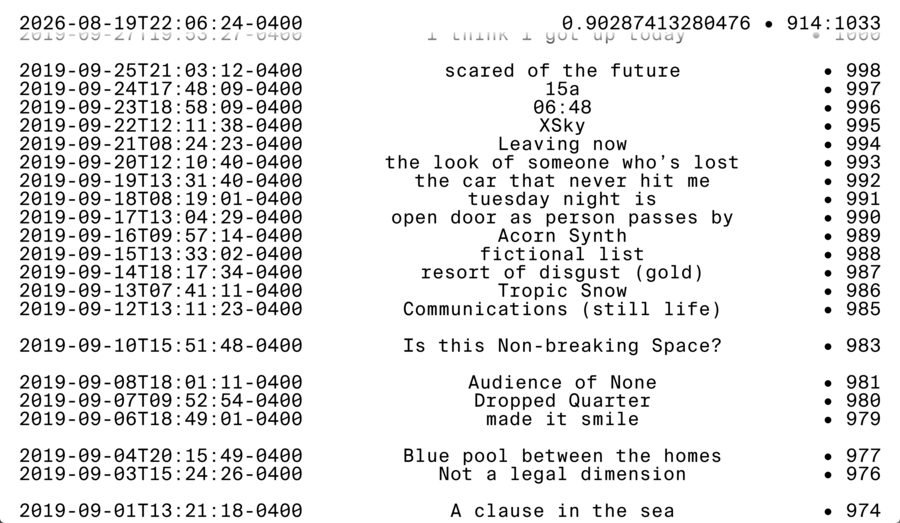

Tuesday 12
-
tagged#work
ask Mira whether the workshop moved to thursday
-
capturedweb app
ask Mira whether the workshop moved to thursday
-
routed
the light in the stairwell at 9, almost orange
-
capturedphone shortcut
the light in the stairwell at 9, almost orange

-
discarded
unsubscribe from the hardware store newsletter
-
tagged#home
4 items
- call the plumber about the kitchen tap before friday
- buy a new filter for the extractor fan
- idea: a bike rack that folds flat into the hallway wall
- the lease, signed
-
tagged#home
call the plumber about the kitchen tap before friday
-
tagged#home
buy a new filter for the extractor fan
-
tagged#home
idea: a bike rack that folds flat into the hallway wall
-
tagged#home
the lease, signed
Monday 5
-
pool setting changedyes
show link previews
-
delivery failed401
soup: leek, potato, a little mustard at the end
-
amendedthe words
the bench by the river has a plaque now
-
destination disabledmarkdown folder
Old vault
Friday 5
-
delivery failedfolder missing
still here, on the wall by the station
-
tagged#street
still here, on the wall by the station
-
capturedphone shortcut
still here, on the wall by the station
-
template createdVault
Project note
-
purged3 captures
Nothing in the log matches
Nothing has happened yet